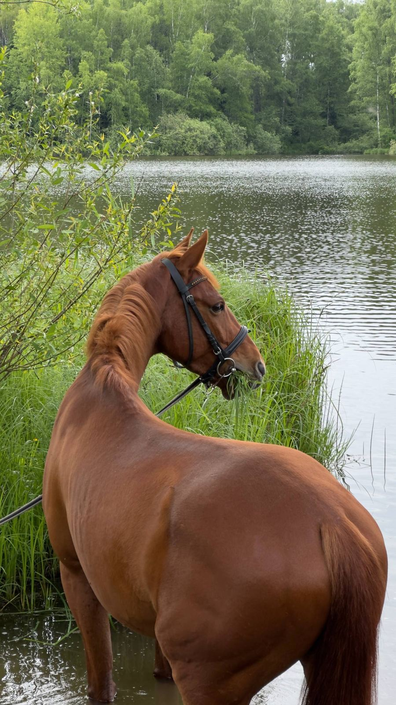

Баркас
Молодой рыжий конь донской и будённовской кровей. Благодаря чуткой работе тренера вырос в уверенного спортивного партнёра с качественными движениями. Спокойный, выдержанный и надёжный — настоящий боевой товарищ.
Спортивный потенциал